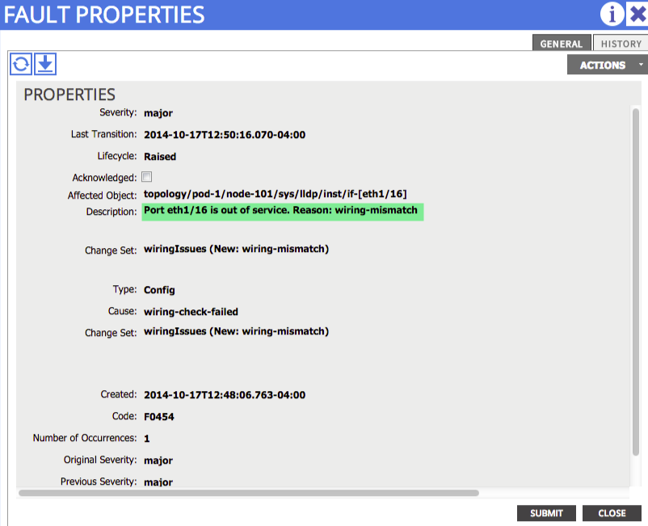

Initial Hardware Bringup¶
Overview¶
This section will cover common issues seen when bringing up the initial hardware. The APIC Fabric can be ordered in several different configurations. There is an option to purchase optical leaves (leaves with Small Form Pluggable (SFP) interfaces), and when that is the case an optical Virtual Interface Card (VIC1225) must be used in the APIC. When a copper leaf is used the optical VIC1225T must be used.
Initial cabling of the ACI fabric is very important and the following requirements must be adhered to:
- Leafs can only be connected to spines. There should be no cabling between the leafs, even when the leafs are being configured as virtual port-channel (vPC) peer devices.
- Spines can only be connected to leafs. Spines cannot be inter-connected.
- An APIC must be attached to a leaf. APICs should be dual-homed (connected to two different leafs) for redundancy.
- All end points, L2, L3, L4-L7 devices must connect to leafs. Nothing should be connected to spines other than leafs as previously mentioned
There are a few common issues that can be observed when initially bringing up a fabric.
Problem Description¶
APIC not discovering Leafs after initially cabling
Symptom 1¶
When first connecting the link between the APIC and leaf, the link interface on the APIC side is down (no lights) but the leaf side inteface has lights on.
Verification/Resolution¶
- The leaf showed the APIC as a LLDP neighbor (show lldp neighbors)
- The APIC did not show the leaf in the output of “acidiag fnvread“
- A physical examination of the setup shows:
{kind=link}
- In the picture above a GLC-T transceiver was plugged into the APIC which has a VIC1225 installed. This is an optical SFP+ Virtual Interface Card (VIC). The other end of the connection is the 93128TX (copper) leaf.
- Their desired behavior was to convert optical to copper (media conversion).
- There are no transceivers qualified to do this sort of conversion. Optical-based VICs need to be plugged into optical-based leafs, and copper based VICs need to be plugged into copper-based leafs.
Once the proper transceiver was used, and a leaf with copper ports was connected the other end, the link came up properly and both the APIC and the leaf were able to share LLDP as expected. Fabric discovery was able to continue as expected.
Symptom 2¶
The APIC does not see the leaf switch in the output of “acidiag fnvread” but the leaf does see the APIC in the output of “show lldp neighbors”.
Verification/Resolution¶
The VIC1225 and VIC1225T need to have the proper firmware at a minimum to ensure that these VIC’s do not consume LLDP and prevent LLDP from going to the APIC. A minimal version of VIC firmware that should be used is 2.2(1dS1). The firmware software can be found available for download at Cisco.com along with the corresponding upgrade instructions. Once the correct version of VIC firmware is used, the APIC can see the LLDP frames from the leaf and fabric iscovery will complete.
Problem Description¶
Amber lights or no lights on the Leaf switch interfaces.
As mentioned in the overview section of this chapter, cabling configurations are strictly enforced. If a leaf is connected to another leaf, or a spine is connected to another spine, a wiring mismatch will occur.
Symptom¶
Using the CLI interface on the leaf, execute the show interface command. The output of the command will show the interface as “out-of-service”.
rtp_leaf1# show interface ethernet 1/16
Ethernet1/16 is up (out-of-service)
admin state is up, Dedicated Interface
Hardware: 100/1000/10000/auto Ethernet, address: 88f0.31db.e800 (bia 88f0.31db.e800)
[snip]
Verification¶
The “show lldp neighbors” output will identify this leaf port is connected to another leaf port.
rtp_leaf1# show lldp neighbors
Capability codes:
(R) Router, (B) Bridge, (T) Telephone, (C) DOCSIS Cable Device
(W) WLAN Access Point, (P) Repeater, (S) Station, (O) Other
Device ID Local Intf Hold-time Capability Port ID
RTP_Apic1 Eth1/1 120
RTP_Apic2 Eth1/2 120
rtp_leaf3.cisco.com Eth1/16 120 BR Eth1/16
rtp_spine1.cisco.com Eth1/49 120 BR Eth3/1
rtp_spine2.cisco.com Eth1/50 120 BR Eth4/1
The following fault will be raised in the GUI under Fabric–>Inventory–>Pod_1–><leaf node>
{kind=link}
This same fault can also be viewed in the CLI.
admin@RTP_Apic1:if-[eth1--16]> faults
Severity Code Cause Ack Last Transition Dn
-------- ----- ------------------- --- ------------------- -----------------------
major F0454 wiring-check-failed no 2014-10-17 12:50:16 topology/pod-1/
node-101/sys/lldp/inst/
if-[eth1/16]/
fault-F0454
Total : 1
The fault can also be viewed in the APIC CLI. The full path is shown below.
admin@RTP_Apic1:if-[eth1--16]> pwd
/home/admin/mit/topology/pod-1/node-101/sys/lldp/inst/if-[eth1--16]
Resolution¶
The resolution for this problem is to correct the cabling misconfiguration. Note: The same problem will be seen for spine cabling misconfiguration where a spine is cabled to another spine.